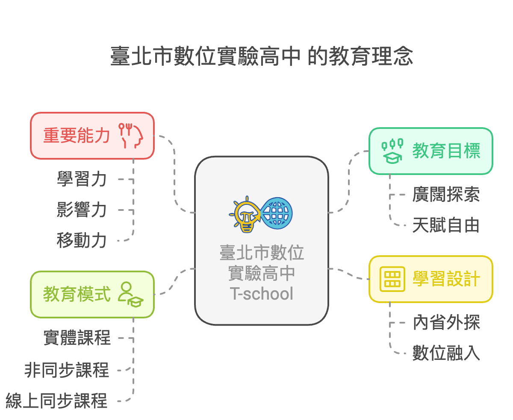

關於 T-school
教育理念及願景
臺北市數位實驗高中 T-school 的教育理念核心相信，教育的目的在於幫助每一位學生探索自我，了解周遭的生活環境，並逐步發展能力，以成為可以應變未來生活的獨立個體。也堅信教育能打破時間與空間，凝聚背景互異的年輕人，透過彼此支持、學習，進而勇於行動與領導，加入改變社會的行列。
為達成此目標，T-school 透過內省外探、尋找天賦的學習設計，訂立『廣闊探索、天賦自由』作為教育目標，並在數位創新、科技轉型的累積基礎下，融合人文與科技，作為學習主軸，期許培育出具「學習力」、「影響力」、「移動力」的世界公民。並提供各種多元潛能發展的領域選修課程，支持學生成為正向改變世界的生力軍。
本校屬於「學校型態實驗教育」，融合數位科技與探究實作，實踐個人化深度學習，並致力為每一位學生量身打造最合適自己的教育模式，幫助學生發揮潛能，促進個人自我實現與社會共榮。

學校歷史
臺北市數位實驗高級中等學校於2021年由臺北市政府配合實驗教育規劃設立，最初被稱為「第一實驗網路高中」。
2022年初，經過公開校名徵選活動，最終定名為「臺北市數位實驗高中」。
2022年7月，學校完成首屆招生，並於8月正式成立。
最初由籌備處主任陳智源擔任代理校長，2023年由原弘道國中校長賴宏銓擔任首任校長。
同年，本校啟用了位於臺北市教育研究發展中心內的吉林基地。
創校緣由
文字
文字
文字
文字